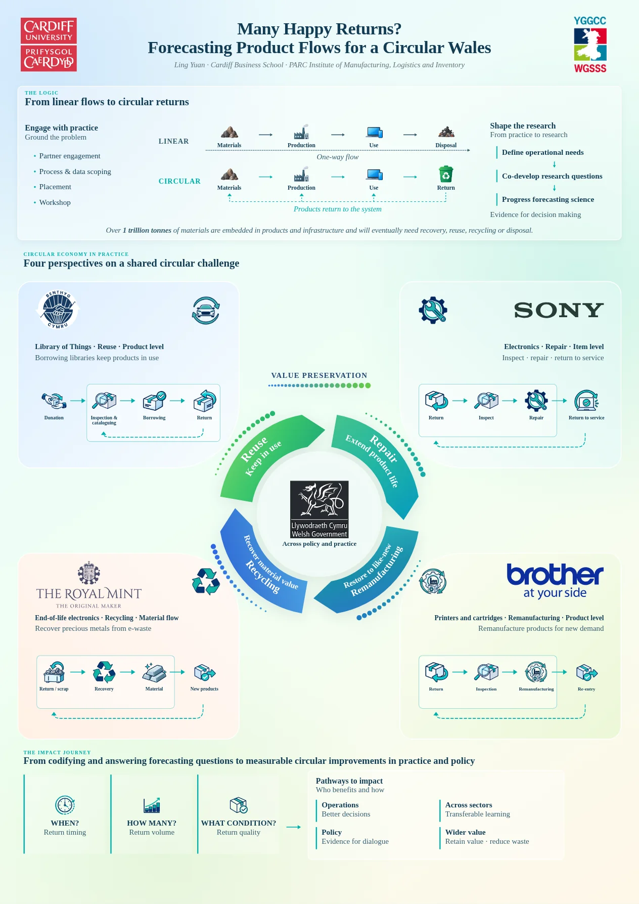
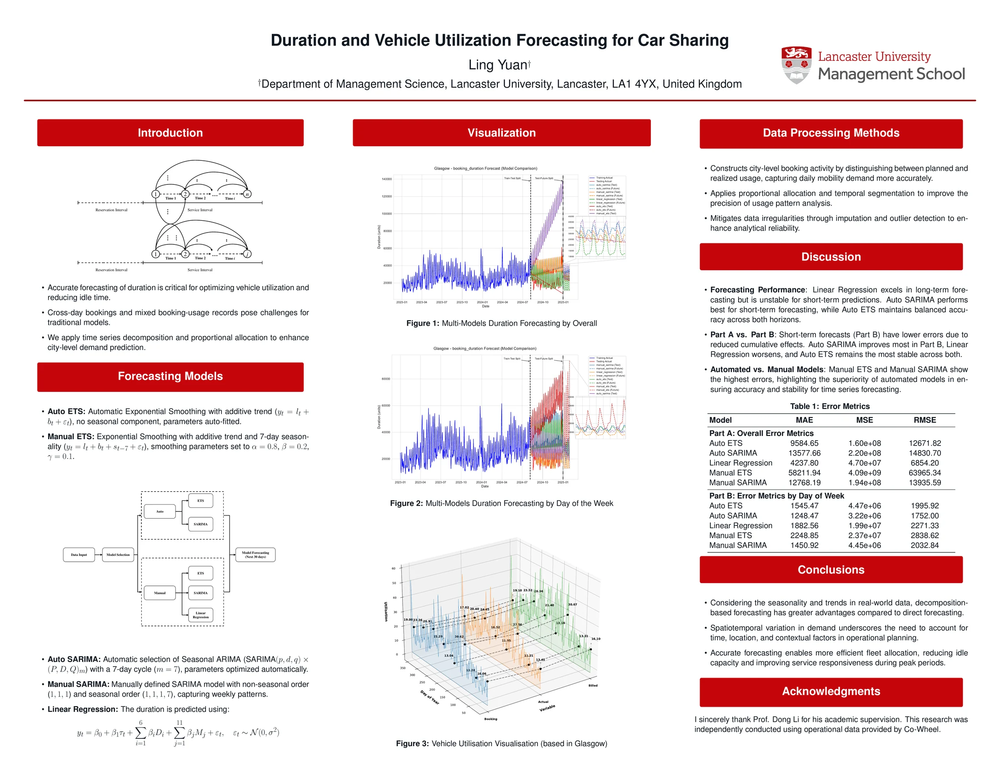

01 / PRIMARY FOCUS
Circular operations & forecasting
My doctoral research examines forecasting in circular and remanufacturing operations. In such systems, product returns depend on past sales, use patterns, product age and market transitions; quantity alone may not capture the operational implications of a return stream.
I am particularly interested in the timing, volume and condition of product returns, as well as product lifecycle turning points that may change forecasting and planning needs.
02 / OPERATIONS RESEARCH
Revenue management & stochastic optimisation
My work in car rental revenue management investigates booking acceptance, vehicle availability and customer-initiated rental extensions. These decisions are intertemporally linked: accepting a booking creates potential future extension opportunities, while extending a rental delays vehicle returns.
My methodological interests include Markov decision processes, approximate dynamic programming, stochastic programming and dynamic pricing, with a focus on scalable decision-making under uncertainty.
03 / RESEARCH APPROACH
From models to decisions
Across projects, I aim to connect analytical methods with decisions that organisations actually face. My work combines problem characterisation, statistical forecasting, optimisation models and numerical evaluation, with an interest in research questions motivated by real operational settings.
Information about collaborators and industry projects is included only when appropriate for public release.
SELECTED PROJECTS
Research projects
Circular economy Forecasting
Many Happy Returns? Forecasting Product Flows for a Circular Wales
Cardiff Business School · PARC Institute of Manufacturing, Logistics and Inventory
Framing product-return forecasting around when, how many and in what condition products flow back, across reuse, repair, recycling and remanufacturing.
Explore project & poster
Car sharing Forecasting
Duration and Vehicle Utilization Forecasting for Car Sharing
City-level forecasting of booking duration and vehicle utilisation using operational data from Co-Wheels, with ETS, SARIMA and linear regression models.
Explore project & poster